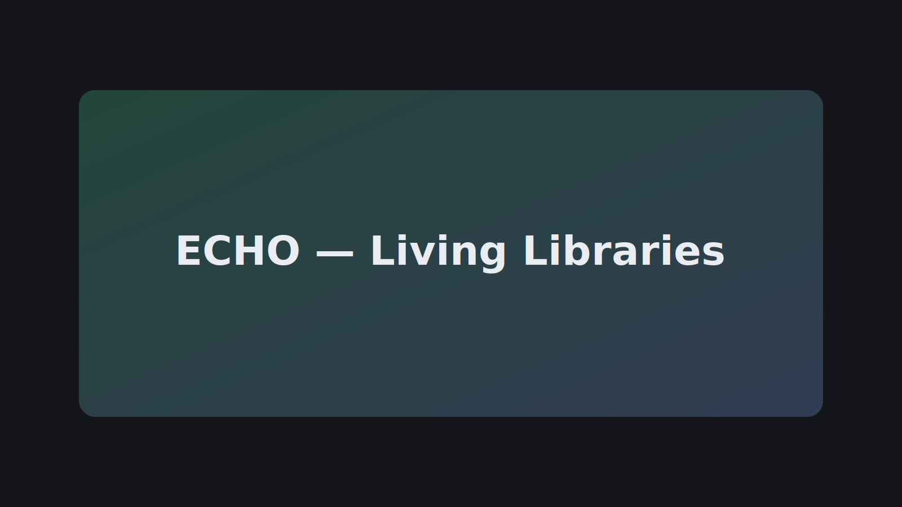

Building a “Living Libraries” app with recorded stories (video/audio/text), categorized and searchable.
Project Spotlight — ECHO

ECHO is a mobile app (Expo / React Native) that lets people capture, store, and share personal histories
(video, audio, text). It integrates Firebase for auth, Firestore for the feed, and Storage for media.
QR codes let users retrieve entries quickly; future versions auto-categorize content.
React NativeExpoFirebaseTypeScript / JavaScriptA/V + QR